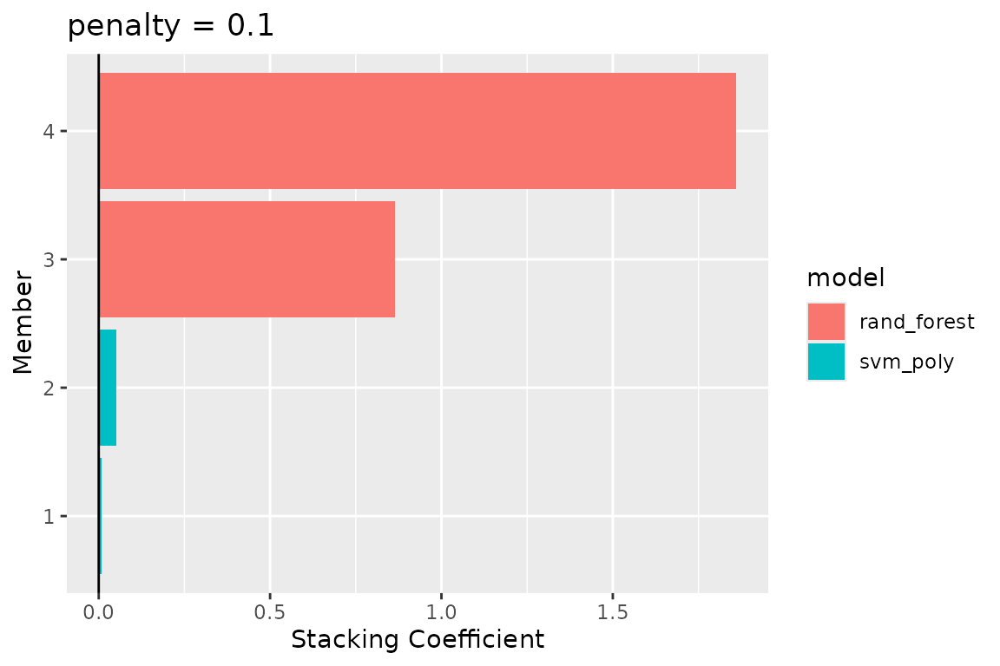
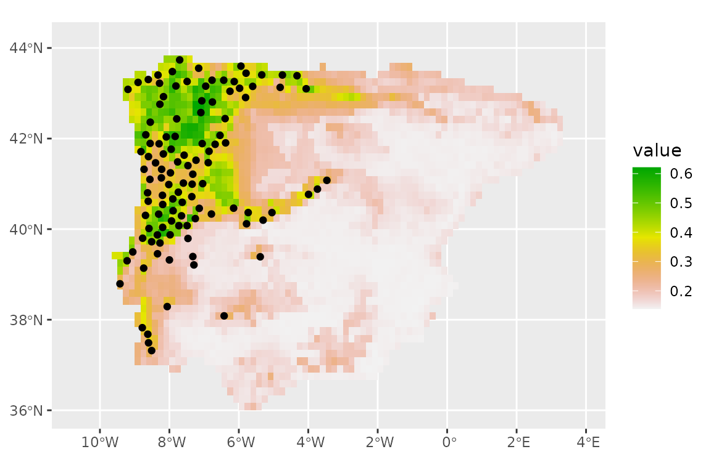

Examples of additional tidymodels features
Source:vignettes/a2_tidymodels_additions.Rmd
a2_tidymodels_additions.RmdAdditional features of tidymodels
In this vignette, we illustrate how a number of features from
tidymodels can be used to enhance a conventional SDM
pipeline. We recommend users first become familiar with
tidymodels; there are a number of excellent tutorials (both
introductory and advanced) on its dedicated website We reuse the example on
the Iberian lizard that we used in the “tidysdm overview”
article.
Preparing your data
Here we quickly shape the dataset as we did in the overview; see that vignette for a detailed explanation of the steps.
We start by reading in a set of presences for a species of lizard
that inhabits the Iberian peninsula, Lacerta schreiberi, and
cast it as an sf object
library(tidysdm)
#> Loading required package: tidymodels
#> ── Attaching packages ────────────────────────────────────── tidymodels 1.1.1 ──
#> ✔ broom 1.0.5 ✔ recipes 1.0.8
#> ✔ dials 1.2.0 ✔ rsample 1.2.0
#> ✔ dplyr 1.1.2 ✔ tibble 3.2.1
#> ✔ ggplot2 3.4.3 ✔ tidyr 1.3.0
#> ✔ infer 1.0.4 ✔ tune 1.1.2
#> ✔ modeldata 1.2.0 ✔ workflows 1.1.3
#> ✔ parsnip 1.1.1 ✔ workflowsets 1.0.1
#> ✔ purrr 1.0.2 ✔ yardstick 1.2.0
#> ── Conflicts ───────────────────────────────────────── tidymodels_conflicts() ──
#> ✖ purrr::discard() masks scales::discard()
#> ✖ dplyr::filter() masks stats::filter()
#> ✖ dplyr::lag() masks stats::lag()
#> ✖ recipes::step() masks stats::step()
#> • Learn how to get started at https://www.tidymodels.org/start/
#> Loading required package: spatialsample
#> Registered S3 methods overwritten by 'tidysdm':
#> method from
#> bake.recipe recipes
#> prep.recipe recipes
data(lacerta)
library(sf)
#> Linking to GEOS 3.10.2, GDAL 3.4.1, PROJ 8.2.1; sf_use_s2() is TRUE
lacerta <- st_as_sf(lacerta, coords = c("longitude","latitude"))
st_crs(lacerta) = 4326Get the appropriate land mask
library(pastclim)
land_mask <-
get_land_mask(time_ce = 1985, dataset = "WorldClim_2.1_10m")
# Iberia peninsula extension
iberia_poly <-
terra::vect(
"POLYGON((-9.8 43.3,-7.8 44.1,-2.0 43.7,3.6 42.5,3.8 41.5,1.3 40.8,0.3 39.5,
0.9 38.6,-0.4 37.5,-1.6 36.7,-2.3 36.3,-4.1 36.4,-4.5 36.4,-5.0 36.1,
-5.6 36.0,-6.3 36.0,-7.1 36.9,-9.5 36.6,-9.4 38.0,-10.6 38.9,-9.5 40.8,
-9.8 43.3))"
)
crs(iberia_poly) <- "lonlat"
# crop the extent
land_mask <- crop(land_mask, iberia_poly)
# and mask to the polygon
land_mask <- mask(land_mask, iberia_poly)#> Loading required package: terra
#> terra 1.7.44
#>
#> Attaching package: 'terra'
#> The following object is masked from 'package:tidyr':
#>
#> extract
#> The following object is masked from 'package:scales':
#>
#> rescaleand then thin the presences (we reset the seed before each operation to match what we had in the original vignette):
set.seed(1234567)
lacerta<-thin_by_cell(lacerta, raster = land_mask)
set.seed(1234567)
lacerta_thin<-thin_by_dist(lacerta, dist_min = km2m(20))
set.seed(1234567)
lacerta_thin <- sample_pseudoabs(lacerta_thin,
n = 3 * nrow(lacerta_thin),
raster = land_mask,
method = c("dist_min", km2m(50)))Quickly plot them:
library(tidyterra)
#>
#> Attaching package: 'tidyterra'
#> The following object is masked from 'package:stats':
#>
#> filter
ggplot() +
geom_spatraster(data=land_mask, aes(fill=land_mask_1985))+
geom_sf(data = lacerta_thin, aes(col = class))
Let’s extract the climate for the variables of interest
download_dataset("WorldClim_2.1_10m")
climate_vars <-c("bio01", "bio10", "bio12")
climate_present<-pastclim::region_slice(time_ce = 1985,
bio_variables = climate_vars,
data="WorldClim_2.1_10m",
crop=iberia_poly)The initial split
The standard approach in tidymodels is to make an
initial split of the data into a test and a training set. We will use
retain 20% of the data (1/5) for the testing set, and use the rest for
training.
set.seed(1005)
lacerta_initial <- spatial_initial_split(lacerta_thin, prop = 1/5, spatial_block_cv)
autoplot(lacerta_initial)
We can now extract the training set from our
lacerta_initial split, and sample folds to set up
crossvalidation (we use the same grid we used on the full dataset
lacerta_thin for the initial_split)
set.seed(1005)
lacerta_training <- training(lacerta_initial)
lacerta_cv <- spatial_block_cv(lacerta_training, v = 5,
cellsize = grid_cellsize(lacerta_thin),
offset = grid_offset(lacerta))
autoplot(lacerta_cv)
Different recipes for certain models
Only certain type of models (e.g. glm, mars) struggle with correlated variables; other algorithms, such as random forests, can handle correlated variables. So, we will create two recipes, one with all variables, and one only with the variables that are uncorrelated:
lacerta_rec_all <- recipe(lacerta_thin, formula=class~.)
lacerta_rec_uncor <- lacerta_rec_all %>% step_rm(all_of( c("bio01", "bio02", "bio03", "bio04", "bio07", "bio08", "bio09", "bio10", "bio11", "bio12", "bio14", "bio16", "bio17", "bio18", "bio19", "altitude")))
lacerta_rec_uncor
#>
#> ── Recipe ──────────────────────────────────────────────────────────────────────
#>
#> ── Inputs
#> Number of variables by role
#> outcome: 1
#> predictor: 20
#>
#> ── Operations
#> • Variables removed: all_of(c("bio01", "bio02", "bio03", "bio04", "bio07",
#> "bio08", "bio09", "bio10", "bio11", "bio12", "bio14", "bio16", "bio17",
#> "bio18", "bio19", "altitude"))And now use this in a workflowset (we will keep it small
for computational time), selecting the appropriate recipe for each
model. We will include a model (multivariate adaptive regression
splines, or MARS) which does not have a wrapper in tidysdm
for creating a model specification. However, we can use a standard model
spec from yardstick:
lacerta_models <-
# create the workflow_set
workflow_set(
preproc = list(uncor = lacerta_rec_uncor, # recipe for the glm
all = lacerta_rec_all, # recipe for the random forest
all = lacerta_rec_uncor # recipe for mars
),
models = list(
# the standard glm specs
glm = sdm_spec_glm(),
# rf specs with tuning
rf = sdm_spec_rf(),
# mars specs with tuning
mars = parsnip::mars(num_terms=tune()) %>%
parsnip::set_engine("earth") %>%
parsnip::set_mode("classification")
),
# make all combinations of preproc and models,
cross = FALSE
) %>%
# tweak controls to store information needed later to create the ensemble
# note that we use the bayes version as we will use a Bayes search (see later)
option_add(control = stacks::control_stack_bayes())We can now use the block CV folds to tune and assess the models. Note
that there are multiple tuning approaches, besides the standard grid
method. Here we will use tune_bayes (to keep computations
fast, we will only explore 3 combination of hyperparameters per model;
this is far too little in real life!).
This tuning method (as opposed to use a standard grid) does not allow
for hyperparameters with unknown limits, but mtry for
random forest and gbm is undefined as its upper range depends on the
number of variables in the dataset. So, before tuning, we need to
finalise mtry by informing the set dials with the actual
data:
rf_param <- lacerta_models %>%
# extract the rf workflow
extract_workflow ("all_rf") %>%
# extract its parameters dials (used to tune)
extract_parameter_set_dials() %>%
# give it the predictors to finalize mtry
finalize(x=st_drop_geometry(lacerta_thin) %>% select(-class))
# now update the workflowset with the new parameter info
lacerta_models <- lacerta_models %>%
option_add(param_info=rf_param,id="all_rf")And now we can tune the models:
set.seed(1234567)
lacerta_models <-
lacerta_models %>%
workflow_map("tune_bayes", resamples = lacerta_cv, initial=8,
metrics = sdm_metric_set(), verbose = TRUE)
#>
[34mi
[39m
[30mNo tuning parameters. `fit_resamples()` will be attempted
[39m
#>
[34mi
[39m
[30m1 of 3 resampling: uncor_glm
[39m
#>
[32m✔
[39m
[30m1 of 3 resampling: uncor_glm
[39m
[30m (635ms)
[39m
#>
[34mi
[39m
[30m2 of 3 tuning: all_rf
[39m
#>
[32m✔
[39m
[30m2 of 3 tuning: all_rf
[39m
[30m (27.4s)
[39m
#>
[34mi
[39m
[30m3 of 3 tuning: all_mars
[39m
#> Warning in max(grid[[nm]], na.rm = TRUE): no non-missing arguments to max;
#> returning -Inf
#> →
[31m
[1mA
[22m
[39m |
[31merror
[39m: `num_terms` should be >= 1.
#> There were issues with some computations
[1m
[31mA
[39m
[22m: x1
#> Warning: All models failed. Run `show_notes(.Last.tune.result)` for more information.
#> no non-missing arguments to max; returning -Inf
#> There were issues with some computations
[1m
[31mA
[39m
[22m: x9
#> Warning: All models failed. Run `show_notes(.Last.tune.result)` for more information.
#> no non-missing arguments to max; returning -Inf
#> Warning: All models failed. Run `show_notes(.Last.tune.result)` for more
#> information.
#> Warning in max(grid[[nm]], na.rm = TRUE): no non-missing arguments to max;
#> returning -Inf
#> Warning: All models failed. Run `show_notes(.Last.tune.result)` for more
#> information.
#> Warning in max(grid[[nm]], na.rm = TRUE): no non-missing arguments to max;
#> returning -Inf
#> There were issues with some computations
[1m
[31mA
[39m
[22m: x22
#> Warning: All models failed. Run `show_notes(.Last.tune.result)` for more information.
#> no non-missing arguments to max; returning -Inf
#> Warning: All models failed. Run `show_notes(.Last.tune.result)` for more
#> information.
#> Warning in max(grid[[nm]], na.rm = TRUE): no non-missing arguments to max;
#> returning -Inf
#> Warning: All models failed. Run `show_notes(.Last.tune.result)` for more
#> information.
#> Warning in max(grid[[nm]], na.rm = TRUE): no non-missing arguments to max;
#> returning -Inf
#> There were issues with some computations
[1m
[31mA
[39m
[22m: x36
#> Warning: All models failed. Run `show_notes(.Last.tune.result)` for more information.
#> no non-missing arguments to max; returning -Inf
#> Warning: All models failed. Run `show_notes(.Last.tune.result)` for more
#> information.
#> Warning in max(grid[[nm]], na.rm = TRUE): no non-missing arguments to max;
#> returning -Inf
#> Warning: All models failed. Run `show_notes(.Last.tune.result)` for more
#> information.
#>
[33m!
[39m No improvement for 10 iterations; returning current results.
#> There were issues with some computations
[1m
[31mA
[39m
[22m: x36
There were issues with some computations
[1m
[31mA
[39m
[22m: x50
#>
#>
[32m✔
[39m
[30m3 of 3 tuning: all_mars
[39m
[30m (12s)
[39mWe can have a look at the performance of our models with:
autoplot(lacerta_models)
Stack ensembles
Instead of building a simple ensemble with the best version of each
model type, we can build a stack ensemble, as implemented in the package
stacks. Stacking uses a meta-learning algorithm to learn
how to best combine multiple models, including multiple versions of the
same algorithm with different hyperparameters.
library(stacks)
set.seed(1005)
lacerta_stack <-
# initialize the stack
stacks() %>%
# add candidate members
add_candidates(lacerta_models) %>%
# determine how to combine their predictions
blend_predictions() %>%
# fit the candidates with nonzero weights (i.e.nonzero stacking coefficients)
fit_members()
autoplot(lacerta_stack, type = "weights")
We can see that two versions of the random forest and one of mars were selected; the stacking coefficients give an indication of the weight each model carries within the ensemble. We can now use the ensemble to make predictions about the testing data:
lacerta_testing <- testing(lacerta_initial)
lacerta_test_pred <-
lacerta_testing %>%
bind_cols(predict(lacerta_stack, ., type="prob"))And look at the goodness of fit using some commonly used sdm metrics.
Note that sdm_metric_set is first invoked to generate a
function (with empty ()) that is then used on the data.
sdm_metric_set()(data= lacerta_test_pred,truth=class,.pred_presence)
#> # A tibble: 3 × 3
#> .metric .estimator .estimate
#> <chr> <chr> <dbl>
#> 1 boyce_cont binary 0.708
#> 2 roc_auc binary 0.993
#> 3 tss_max binary 0.932We can now make predictions with this ensemble:
prediction_present <- predict_raster(lacerta_stack, climate_present, type="prob")
ggplot() +
geom_spatraster(data=prediction_present, aes(fill=.pred_presence))+
scale_fill_terrain_c() +
# plot presences used in the model
geom_sf(data = lacerta_thin %>% filter(class=="presence"))